These elements are used in both official and user-made holds, and are all available to you in the editor, but are not used in Gunthro and the Epic Blunder
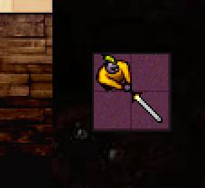 Floating Platforms can be used by Beethro/Gunthro to cross areas of pit.
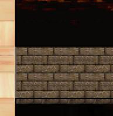 Bridges must be anchored to a wall, floor, trapdoor, or similar object to remain in place. If all its anchor points are removed, the bridge falls down into the depths, taking everything it supported with it.
Tarstuff gates (or black doors) are opened when all of the tarstuff in a room has been removed. Like yellow and red doors, leaving a room will make black doors close again.
The sister gates behave exactly like their counterparts, except that they close when the corresponding event happens. This can be very dangerous in the case of level and room clear gates, which remain closed even after you leave the room.
Hot tiles are dangerous to stand on. Anything, including you, that can be hurt by a sword will die if it stands still on a hot tile for one turn. The only exceptions to this are the various forms of tarstuff, which are completely unharmed by the heat.
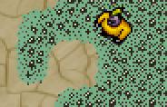 Oremites are small creatures that feed on metal. They are not dangerous by themselves, but Beethro must keep his sword sheathed when walking around in an area covered with them.
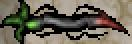 Briars block your way, but are not otherwise dangerous. However, a patch of briars connected to a briar root will grow outwards at a steady pace. Each time the briar grows, the newly created briar pieces must first mature; they do so at a rate of one per turn for each root in the patch. When the patch is completely mature, it grows one tile outwards. Standing in its way at this point is a very bad idea.
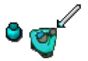 The mimics are unleashed when Beethro drinks a mimic potion. After Beethro drinks the potion, all activity in the room stops while you use the movement keys to find a place for a mimic. When you've reached the desired location, press the wait key ("5") and a mimic will appear. Mimics are copies of Beethro and they move exactly as he does. Pushing the mimics against obstacles will change their position relative to Beethro.
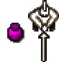 When Beethro drinks an invisibility potion, he becomes invisible to monsters. However, if he steps within 5 squares of a monster it will be able to smell him. Picking up another invisibility potion will make Beethro visible again.
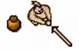 Decoys are produced when Beethro drinks a decoy potion. Like mimic potions, after drinking, all activity stops until the decoy has been placed. Decoys will not move after it has been placed. They can be used to distract monsters. If a decoy is within 5 squares of a monster and Beethro is far away, the monster will move to the decoy instead of Beethro.
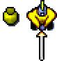 Clones are produced when Beethro drinks a clone potion. When left alone, clones don't do much of anything, but Beethro is able to move his consciousness from his current body to a clone (using the "Tab" key), thus allowing him to reach areas that would not otherwise be accessible.
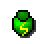 Speed potions make Beethro faster, allowing him to make two moves in the time he normally makes one.
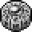 Mirrors not only block Evil Eye and Aumtlich gazes, and can be used to weigh down pressure plates. Beethro can push them around by himself, or he can use his sword to do so. He can destroy them by striking them head-on. They can also be pushed into shallow water to make stepping stones, but sink in deep water.
When Beethro steps on an arrow rotator token, all force arrows in the room are turned 45 degrees in the direction indicated. The token then changes direction, and stepping on it again will rotate arrows back.
When Beethro steps on a tar/mud switcher, all tar in the room changes to mud, and vice-versa. Other versions also exist.
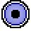 Stepping on a vision token gives Beethro enhanced awareness of his surroundings. This allows him to see invisible things, what is hidden under tarstuff, and makes him aware of the line of sight of evil eyes. Stepping on the token again removes this effect.
Stepping on a power token allows Beethro to control any fegundos in the room and activate orbs by touching them. It also alerts all monsters in the room that whoever just activated the token is edible. This doesn't matter much to Beethro, whom the monsters try to eat anyway, but it may matter to other individuals.
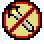 When Beethro steps on a disarm token, his sword is taken away. The upside of this is that while he's swordless, he can walk on trapdoors without dropping them. He can get his sword back by stepping on the token again or leaving the room.
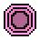 The relay station is a place where the Empire's citizens work. Citizens will continually move between relay stations to pick up materials.
The persistent movement token is always activated. When this token is present in a room, citizens will never give up in their attempts to reach the next relay station on their route.
Orthogonal squares prevent all movements of diagonal directions. This means that if Beethro is standing on such a square, he can only leave this square by north, east, south or west. It also means that he cannot enter an orthogonal square diagonally.
If a conquer token is present in a room, you must step on it to conquer the room. Additionally, your CaravelNet high score for conquering the room is calculated as the number of moves it took you to reach the token, rather than the number of moves it took you to clear the room and leave.